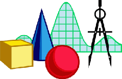
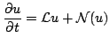

"Our mind is frail as our senses are; it would
lose itself in the complexity of the world if
that complexity were not harmonious; like
the short-sighted, it would only see details,
and would be obliged to forget each of these
details before examining the next because it
would be incapable of taking in the whole.
The only facts worthy of our attention are
those which introduce order into this
complexity and so make it accessible to us."
--- H. Poincar´e, Science and Method